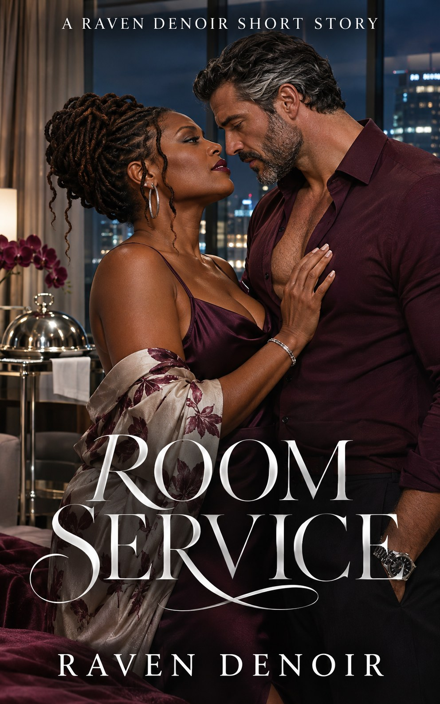

A Raven DeNoir Newsletter Exclusive
Room Service
“He sent dinner back twice. She brought the third one up herself.”
⚠ CONTENT WARNING
This is a high-heat BWWM romance containing graphic, explicit sexual content and explicit language. It’s two in the morning after Thanksgiving, her overnight manager has the flu, and the man in Suite 1201 has sent back two bowls of pasta. She’s bringing the third one up herself.
For mature readers 18+ only.
Room Service
Raven DeNoir
1 of 1
Pages read this session: 0